LES CENDRES DE VALOMBRE
Chroniques d’un royaume oublié
Chapitre I · Les bois maudits
LE PÈLERIN
Errant des cendres
Arme · Sabre
PV 100 / 100XP 0 / 5NIV. 1
La forêt sommeille
Prêt à partir
Normal

ARMES 1 / 5 Toutes attaquent automatiquementBOSS
⇧EsquivePrête
ECharge de cendrePrête
WASD se déplacer ESPACE attaquer